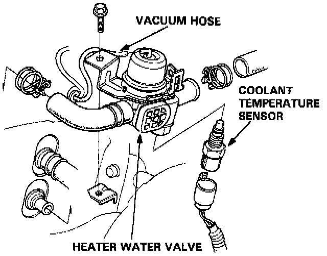

Heater Control Valve: Service and Repair
Heater Water Valve / Coolant Temperature Sensor Removal1. Drain the radiator coolant.

2. Loosen the clamp to disconnect the heater hoses at the heater.
3. Disconnect the vacuum hose and the wire harness from the heater water valve.
4. Remove the mounting bolt, then remove the water valve.
5. Remove the coolant temperature sensor from the water valve.
Installation
Install the heater water valve and the coolant temperature sensor in the reverse order of removal.